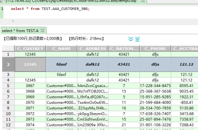
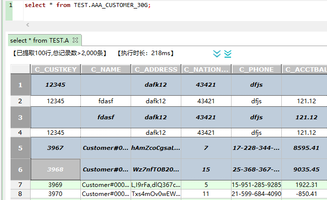
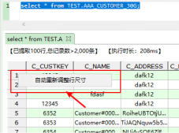
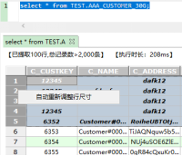
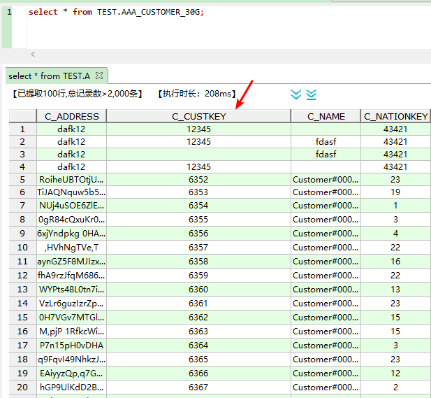
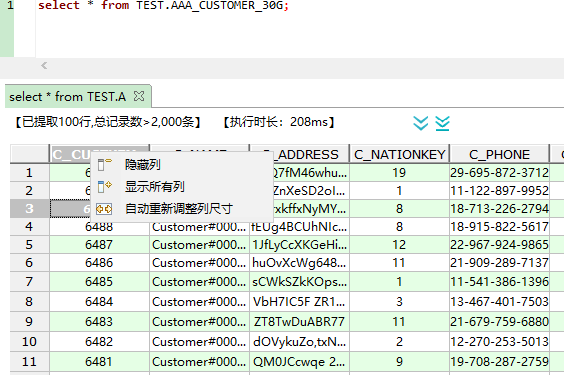
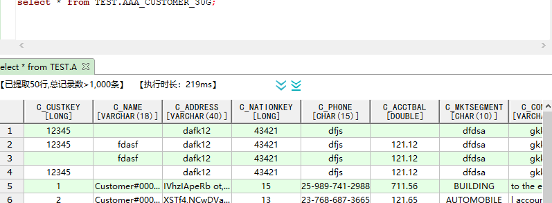
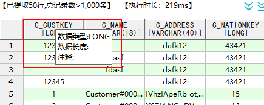

调整行高，单行或多行高亮选中
①、调整行高：查询结果表鼠标放在行号处调整单行行高，或者在行号处使用shift键、ctrl键选中多行来调整选中行行高(行高取决于选中行最后一行拖拽的宽度)。


②、在行号处(或选中多行)通过右键选择 自动调整行尺寸 调整行高（自适应）
 
①、在列名处左右拖动自定义调整列宽，如图：

②、查询结果表右键可以将选中列进行隐藏 、调整列宽(自适应)、显示隐藏的列功能，如图：

在查询结果表中，表头新增列对应的数据类型、数据长度内容。如图：

同时表头新增悬浮提示功能。提示信息如下：
